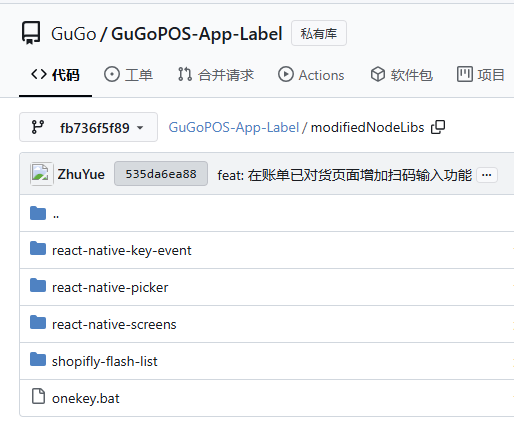
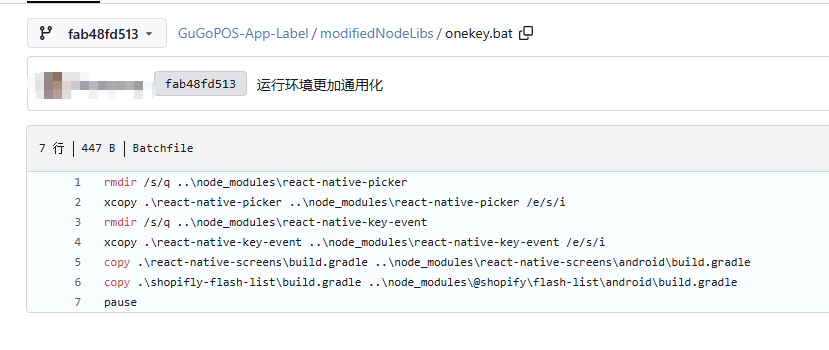
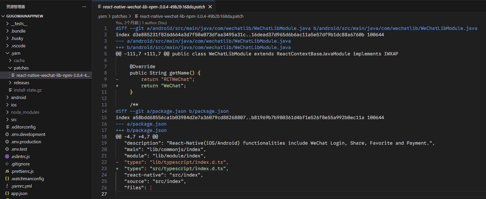
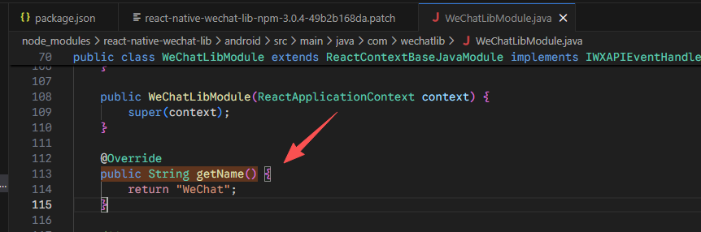

分享
1、优雅的修改第三方库
小朋友，你是否有很多问号？



在第三方库有 bug，或者不能满足我们的使用需求的情况下。
PR 合并太慢，想立刻用上，但又要等发布？
等等等各种原因的情况下
如何优雅的修改第三方库？
1、 patch-package
2、 yarn v2+
yarn patch <package>
D:\code\GuGo\GuGoMainAppNew>yarn patch react
➤ YN0000: Package react@npm:19.0.0 got extracted with success!
➤ YN0000: You can now edit the following folder: C:\Users\utopia\AppData\Local\Temp\xfs-434126c1\user
➤ YN0000: Once you are done run yarn patch-commit -s "C:\Users\utopia\AppData\Local\Temp\xfs-434126c1\user" and Yarn will store a patchfile based on your changes.
➤ YN0000: Done in 0s 58ms
运行之后，会创建一个工作空间，然后完成修改之后
yarn patch-commit -s "xxxx"
之后会生成一个 patch 文件（需要通过版本管理提交到代码仓库）
以后运行 yarn install 就会自动打上 patch


以上两个方案都是基于 diff patch 的，方案 1 更通用一点，方案 2 依赖 yarn v2 的功能。
当然也完全可以基于 git 的 diff patch 来实现，但是还是需要手动执行 patch，以上两个方案都是会自动在 install 的阶段打上 patch ，完全无感，但是还是建议补全文档。
2、如何优雅的实现一个健壮的列表页面
前提条件：
- 设计规范统一
- 接口规范统一、幂等
- 业务逻辑大致相似
需求：
- 带
loading,error - 带分页可控分页参数
- 返回页面之后自动重加载
步骤
1、 先实现列表页的大致 UI 框架，通过 Props 修改可修改的部分。
2、 思考数据的处理方式
观察如下代码，是否有问题？
function ProductList() {
const [products, setProducts] = useState([]);
const [currentPage, setCurrentPage] = useState(1); // 当前页
const [pageSize, setPageSize] = useState(10); // 每页数量
const [totalCount, setTotalCount] = useState(0); // 总数量
const [isLoading, setIsLoading] = useState(false); // 页面loading状态
const [error, setError] = useState(null); // 页面error状态
useEffect(() => {
let isMounted = true; // 防止卸载后setState警告
const fetchData = async () => {
try {
setIsLoading(true);
const res = await fetch("/api/products");
if (!res.ok) throw new Error("请求失败");
const data = await res.json();
if (isMounted) setProducts(data);
} catch (err) {
if (isMounted) setError(err);
} finally {
if (isMounted) setIsLoading(false);
}
};
fetchData();
return () => {
isMounted = false;
};
}, []);
if (isLoading) return <div>加载中...</div>;
if (error) return <div>出错了：{error.message}</div>;
return (
<ul>
{products.map((p) => (
<li key={p.id}>{p.name}</li>
))}
</ul>
);
}
以下的书写方法是不是不会散落？易于阅读？
const [listData, setListData] = useState({
users: [],
totalCount: 0,
});
const [pagination, setPagination] = useState({
currentPage: 1,
pageSize: 10,
});
const [uiState, setUiState] = useState({
isLoading: false,
error: null,
});
function fetchUsers() {
setUiState({ isLoading: true, error: null });
api
.getUsers(pagination.currentPage)
.then((res) => {
setListData({
users: res.data,
totalCount: res.total,
});
setUiState({ isLoading: false, error: null });
})
.catch((err) => {
setUiState({ isLoading: false, error: err.message });
});
}
是否所有的数据都需要用 useState 包裹？
totalCount 这个东西真的是要放在 state 中吗？
const [listData, setListData] = useState([]);
function addItem(item) {
setListData([...listData, item]);
}
function removeItem(itemId) {
setItems(listData.filter((i) => i.id !== itemId));
}
// 这些都是计算出来的，不需要 state
const totalCount = listData.length;
// 如果是购物车价格的话
const totalPrice = listData.reduce((sum, item) => sum + item.price, 0);
vue 中的 compute 是一个带缓存的好东西。
react 中，可以考虑使用 useMemo, useCallback之类的来实现相同的功能。
优雅的设计 store，使用 getter 等方法
3、 如何封装成组件？
组件应该完成的本职工作：
- 渲染
loading，error - 根据
listData渲染列表 - 分页
pagination显示 - 卸载时清理
外部向组件传递的参数：
- 获取数据的
api pagination- 如果必要的话，自定义的
loading，error
拆分的 hook
function Page() {
const [otherQueryParams, setOtherQueryParams] = useState("xx");
const { data, loading, error, pagination } = usePagination(
({ pageNum, pageSize }) => {
return getList({
pageNum,
pageSize,
otherQueryParams,
});
},
[deps]
);
const { pageNum, pageSize, total, onChange } = pagination;
return (
<>
<List
loading={loading}
error={error}
run={run}
pageSize={pageSize}
pageNum={pageNum}
data={data}
/>
<Pagination
pageNum={pageNum}
pageSize={pageSize}
total={total}
onChange={onChange}
/>
</>
);
}
// 纯组件，只负责展示
function List({ data, loading, error, run, pageSize, pageNum }) {
if (loading) {
return <Loading />;
}
if (error) {
return <Error />;
}
return (
<ul>
{data.map((i) => (
<li>{i}</li>
))}
</ul>
);
}
关于 ahook 和 usePagination
感兴趣的可以自行封装一下，或者参考 ahook 源码。
3、 AbortController，优雅的取消一次请求并且方式内存泄漏
如果页面组件已经卸载，而网络请求此时才完成，那么尝试 setState 的时候，有可能会导致内存泄漏。
// 创建控制器
const controller = new AbortController();
const signal = controller.signal;
// 发起请求时关联signal
fetch("https://api.example.com/data", { signal })
.then((response) => response.json())
.then((data) => console.log(data))
.catch((error) => {
if (error.name === "AbortError") {
console.log("请求已取消");
}
});
// 需要取消时调用
controller.abort();
import { useState, useEffect } from "react";
import { Card, CardBody, CardTitle } from "reactstrap";
const SafeDataFetcher = () => {
const [data, setData] = useState(null);
useEffect(() => {
const controller = new AbortController();
const signal = controller.signal;
const fetchData = async () => {
try {
const response = await fetch("https://api.example.com/data", {
signal,
});
const result = await response.json();
setData(result);
} catch (error) {
if (error.name !== "AbortError") {
console.error("请求失败:", error);
}
}
};
fetchData();
// 组件卸载时取消请求
return () => {
controller.abort();
};
}, []);
return (
<Card>
<CardBody>
<CardTitle>安全数据加载</CardTitle>
{data ? JSON.stringify(data) : "加载中..."}
</CardBody>
</Card>
);
};